待使用者確認風格
兵種訓練圖示 · 2026-10-16
七個可訓練兵種的指令卡圖示（誓衛統領同時用於復活）。來源是遊戲內已發布的原創 3D 模型，以 runtime 的藍隊色、待機姿勢與選取肖像燈光渲染，沒有新畫任何像素，也沒有用生圖模型。
遊戲尺寸 48px：既有指令圖示（上）與新圖示（下）
attack-move
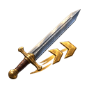
stop
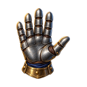
hold
armor
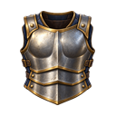
weapons
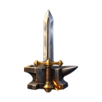
banner
building-barracks
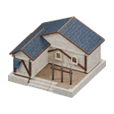
building-stable
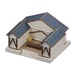
building-workshop
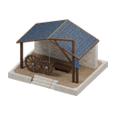
building-altar
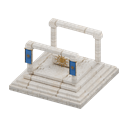
工人
王國衛兵
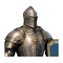
弩手
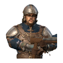
牧師
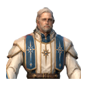
騎士
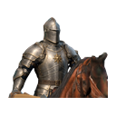
攻城車
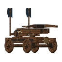
誓衛統領（含復活）
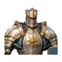
多選清單縮圖 24px
128px 成品（棋盤格驗透明）與原始渲染
128px · 原始渲染
128px · 原始渲染
128px · 原始渲染
128px · 原始渲染
128px · 原始渲染
128px · 原始渲染
128px · 原始渲染
機械 QA 對照表
四列依序為棋盤格、HUD 暗底、亮底、alpha 遮罩。全部 7 張通過：128×128、邊距 ≥ 8px、貼邊 0、2px 外半透明 0、透明區 RGB 殘留 0、洋紅殘留 0、WebP 無損 RGBA 完全一致。報告：runs/unit-train-icons/2026-10-16-v1/qa/mechanical-report.json